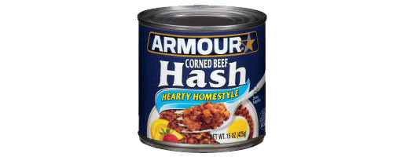

Enumerable#group_by - Another Way to Make a Hash
I love learning what methods can do on ruby.doc.org. For this post I'll take you through what I've learned about Enumerable#group_by.
The group_by method of the Enumarable module in Ruby takes a set of data and groups it into a collection know as a hash. The examples below show an array of names of my family members:
>family = ["david", "lamps", "becky", "lamps", "andrew", "lamps", "adellyn", "lamps"]
Below I'll show how the group_by method organizes my family member's names into a hash, depending on how I tell it to group it. When applying .group_by, in the first example it is followed by { |name| name[0] }. This is saying for each name in my array, use the 0 index position of the word to group them into key-value pairs within a hash. The first example uses the first letter of each name as the criteria:
>family.group_by { |name| name[0] }#=> {"d"=>["david"], "l"=>["lamps", "lamps", "lamps", "lamps"], "b"=>["becky"], "a"=>["andrew", "adellyn"]}
This basically collects all of the names based on if they have the same first letter. So david is assigned to the d key, lamps,lamps,lamps,lamps is assignd to the l key, etc.
Below are examples of grouping by various index numbers:
>family.group_by { |name| name[1] }#=> {"a"=>["david", "lamps", "lamps", "lamps", "lamps"], "e"=>["becky"], "n"=>["andrew"], "d"=>["adellyn"]}
>family.group_by { |name| name[2] }
#=> {"v"=>["david"], "m"=>["lamps", "lamps", "lamps", "lamps"], "c"=>["becky"], "d"=>["andrew"], "e"=>["adellyn"]}
>family.group_by { |name| name[3] }
#=> {"i"=>["david"], "p"=>["lamps", "lamps", "lamps", "lamps"], "k"=>["becky"], "r"=>["andrew"], "l"=>["adellyn"]}
>family.group_by { |name| name[4] }
#=> {"d"=>["david"], "s"=>["lamps", "lamps", "lamps", "lamps"], "y"=>["becky"], "e"=>["andrew"], "l"=>["adellyn"]
>family.group_by { |name| name[5] }
#=> {nil=>["david", "lamps", "becky", "lamps", "lamps", "lamps"], "w"=>["andrew"], "y"=>["adellyn"]}
>family.group_by { |name| name[6] }
#=> {nil=>["david", "lamps", "becky", "lamps", "andrew", "lamps", "lamps"], "n"=>["adellyn"]}
For this last example, the criteria for grouping is if the name is lamps. This creates two keys, false and true. If the name is lamps, it is assigned to the true key. Otherwise the name is assigned to the false key.
>family.group_by { |name| name == "lamps" }#=> {false=>["david", "becky", "andrew", "adellyn"], true=>["lamps", "lamps", "lamps", "lamps"]}
This grouping can also be used with numbers. The example below takes the numbers 1 through 6, and then i%3 organizes them into groups of 3. If it had been i%2, it would create groups of 2, and i%6 would create groups of 6.
(1..6).group_by { |i| i%3 }#=> {0=>[3, 6], 1=>[1, 4], 2=>[2, 5]}